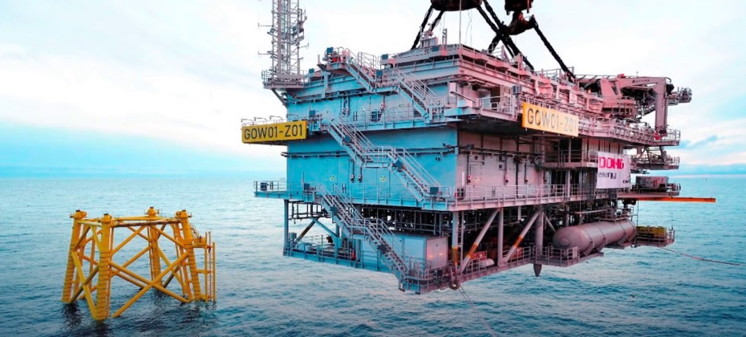

CONSEILPREV
OFFSHORE SUBSTATIONS · OT SECURITY
Engineering evidence you can rely on.

OFFSHORE SUBSTATION TOPSIDE INSTALLATION
offshore wind · industrial cybersecurity
Offshore
substations
OT cybersecurity · IEC 62443
Design · Integration · Compliance
Independent engineering advice for UK offshore wind disputes
industrial cybersecurity
Secure the
substation
control systems
IEC 62443
Security & maturity levels
OT security of substation control systems, measured against IEC 62443.
RISK
Assessment & mitigation
Risk assessed and mitigated from design to operation.
IACS
Service provider
OT security management of the offshore substation · IEC 62443 · ISO 27000.
track record
Built from
the
topside
up
OT
Gode Wind 3 · Ørsted
OT security management of the OSS as IACS service provider · IEC 62443 · ISO 27000
OWF
Deutsche Bucht
Head of Engineering · basic & detailed substation design
EPC
Merkur
Third-party consultant · offshore substation
EPC
Veja Mate
Third-party consultant · offshore substation
HV
Modular Offshore Grid · Belgium
HV grid linking four offshore wind farms to Zeebrugge
+ EPC engineering on EU and APAC substations · Taiwan · Malaysia
design scope
Every system
on the deck
Electrical & control systems
FEED & EPCI
General topsides layout
Auxiliary equipment
Accommodation & helideck
Installation engineering
the instruction
Your five
questions
1
Platform function
2
Integration & cables
3
Design compliance
4
Interfaces & responsibilities
5
Industrial
cybersecurity
OT security of substation control systems: IEC 62443 security and maturity levels, risk assessment and mitigation from design to operation.
your expert
CONSEILPREV
Offshore wind · Oil & gas · LNG · Nuclear · Industry
33+
Christophe CERF
CEO · Lead Offshore Substation Consultant
i-aes.eu · i-aes.com
Let's discuss the instruction
→
christophe.cerf@i-aes.com · +33 6 60 69 21 45